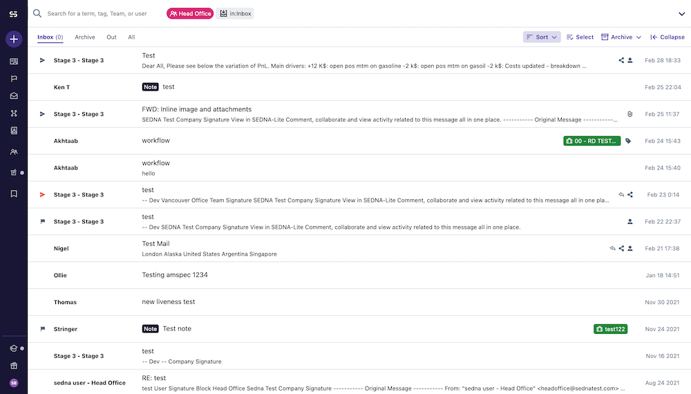

SEDNA
SEDNA is a scale-up, venture capital funded company solving team communications at scale. I began work with SEDNA freelance to help with category design (not able to be shown) defining how to redesign email and high volume communications.
Most of my work at SEDNA has been about laying the ground work for redesigning high volume communications, building a team, practice and processes to take an interface requiring days of training and potential weeks of support to a more user-friendly and powerful enterprise application for users.
- Helped hire an entire design team of 8, 4 interaction and 3 interface designers, including a interface design lead
- Led the redesign of critical product components including navigation, message composition and reading and the design of new features like automation
- Led the beginning of a complete UI overhaul of the platform and began work on establishing a design system
- Conducted the first user research at the company, then helped start a User Research practice and recruited a lead researcher to build out those efforts
- Established service design as a practice in the first service mapping of the product to examine the onboarding and customer support processes and systems
- Performed and assisted leadership in design, research and development integration and process improvement
- Performed DesignOps management in overseeing and helping ensure effective processes in conjunction with development. This also included help with and creation of creative strategies to drive growth in design and collaboration with Product and Engineering.
- Performed design advocacy and introduced a culture of user-centred design
